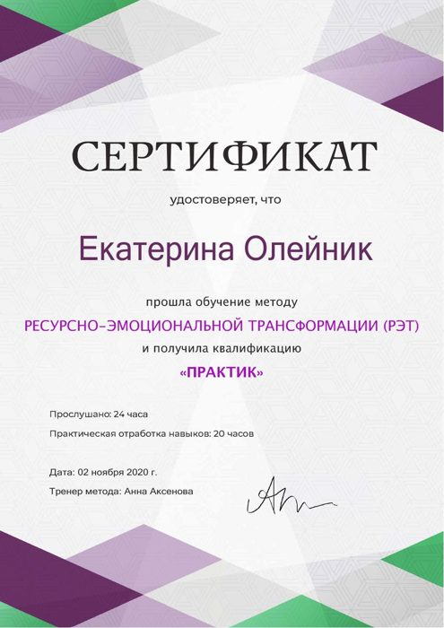

Learn the RET method
A step-by-step method for working with emotions and life problems. For yourself, to understand your own states, or to help other people.
I'll tell you about the course and answer your questions.
A step-by-step method for working with emotions and life problems. For yourself, to understand your own states, or to help other people.
I'll tell you about the course and answer your questions.

If you want to understand your emotions and work through difficult situations on your own.
If you're a practitioner, coach or psychologist and want to add a clear, structured method to your work.
Introduction and theory: what RET is and how a subconscious program forms
How a session works: the route from problem to check
Working with emotions: fear, aggression, guilt, self-pity, shame, despair
Basic needs
Analysing a problem: breaking it into aspects and where to start
Technique details and common mistakes
Metaphors
The practitioner's role: how to run a session
Special topics from practice
A full session example
I start a group 2–3 times a year, once a few people are interested. Message me and I'll add you to the list for the next group.
I have been a certified RET practitioner since 2020, trained by Anna Aksyonova. I found the method as a client in 2018–2019 and have led hundreds of sessions since. The method was created by Tamara Tsigler.

No. The method has a clear step-by-step structure that anyone can learn.
Ukrainian.
No. The course teaches the RET method but doesn't replace a psychology degree. I'm not a psychologist or psychotherapist myself, but a practitioner of the method.
Theory classes are recorded, so you can catch up. Try not to miss practice classes: that's where you lead and observe sessions.
Yes. After the course you receive a certificate of completion in the RET method.
Message me and we'll set up a free 20-minute intro call.